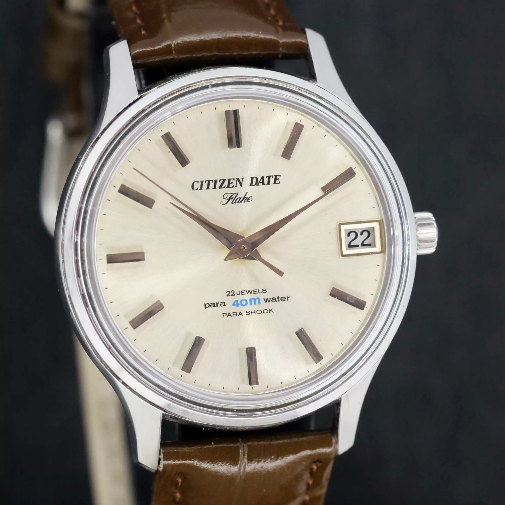
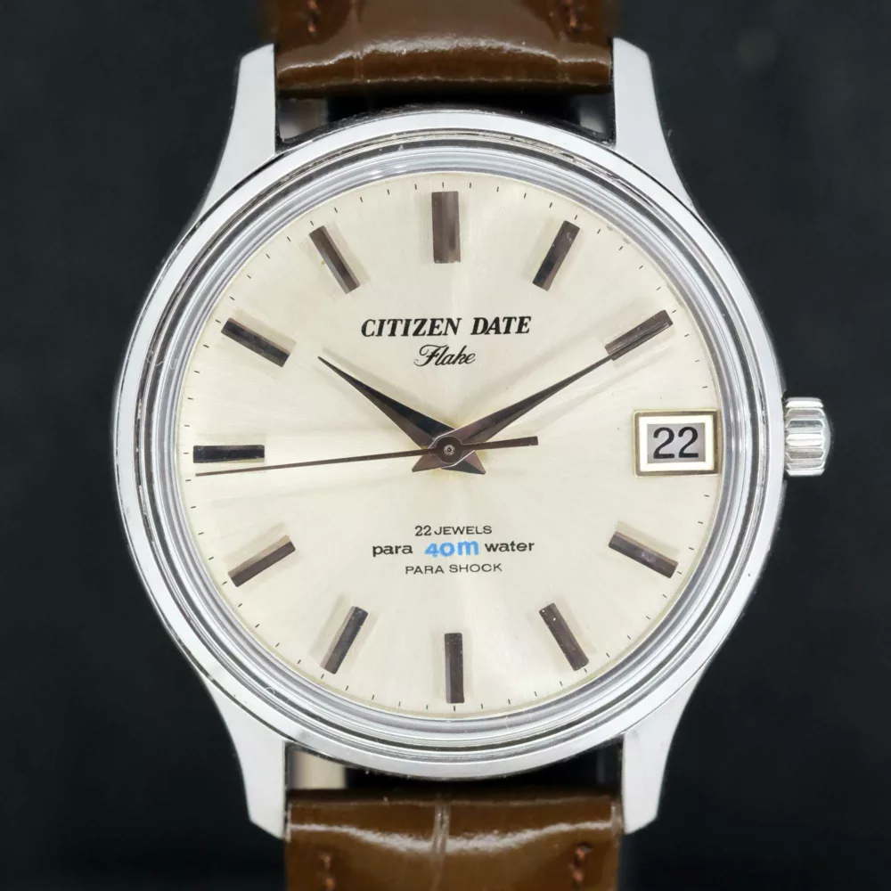
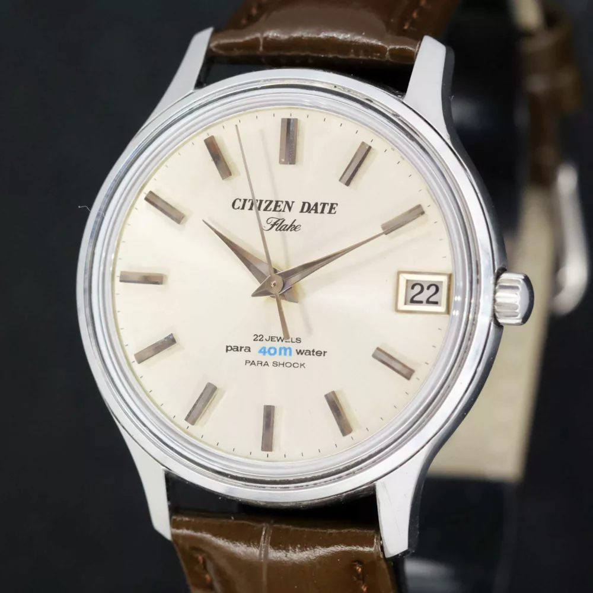
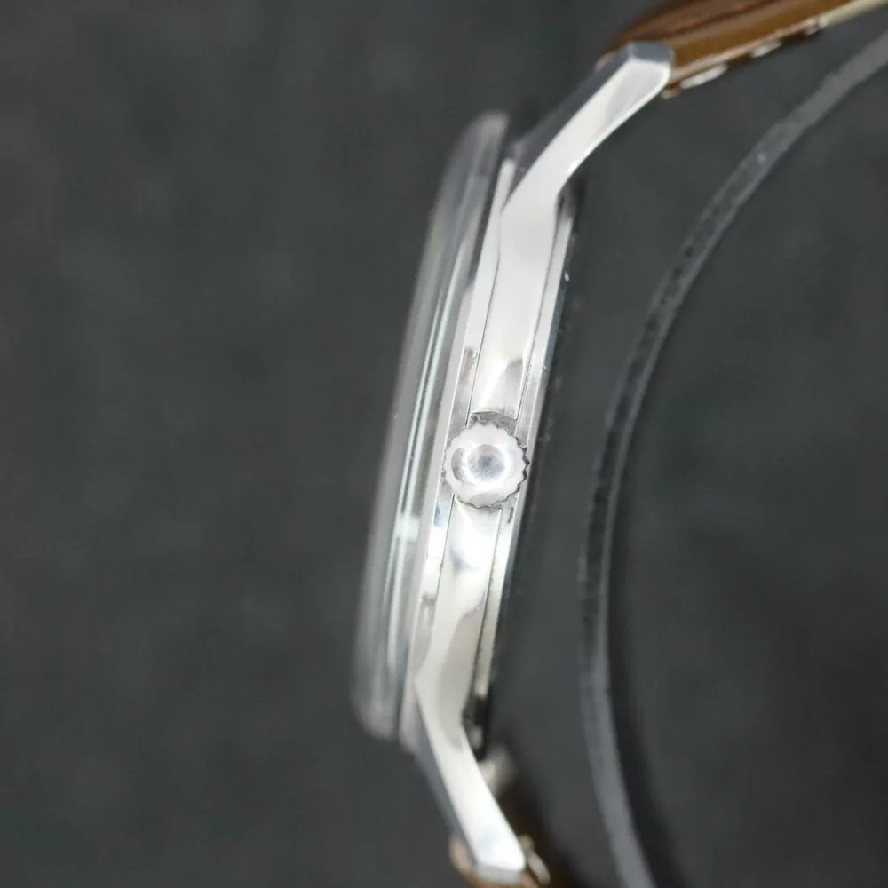
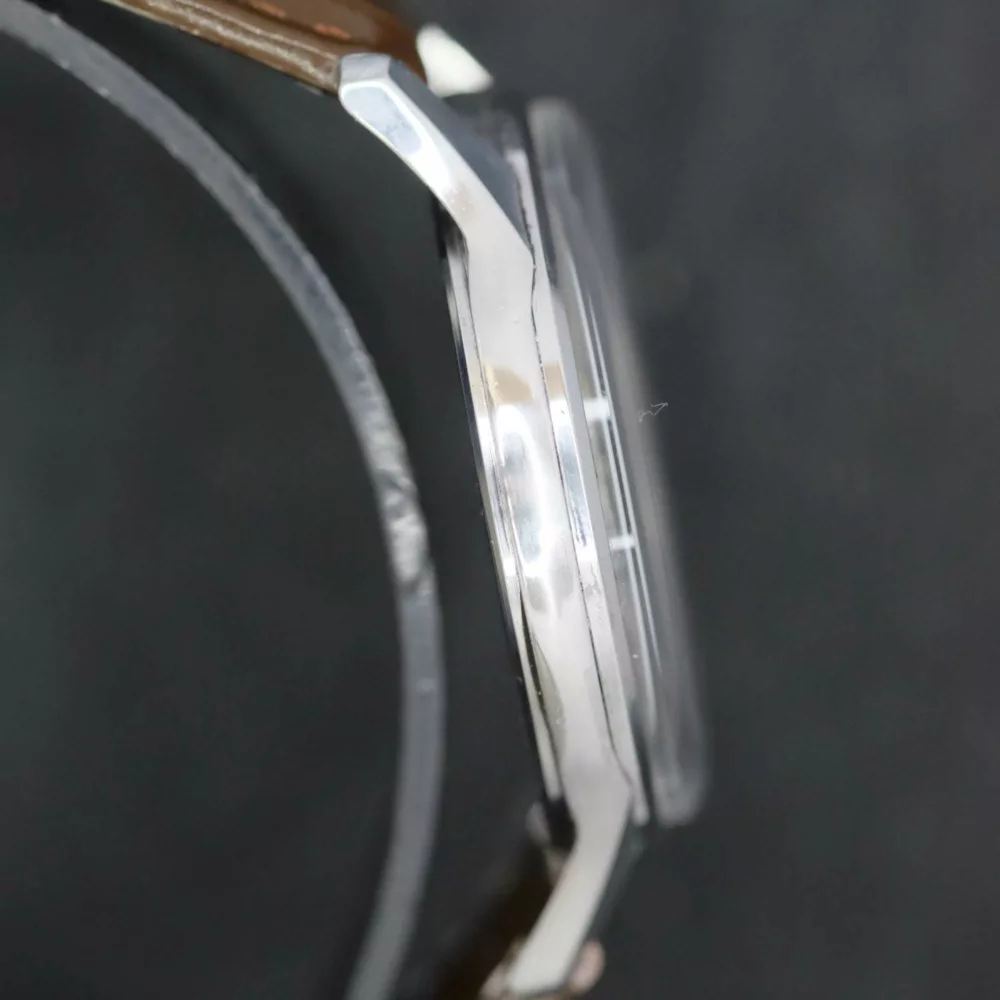
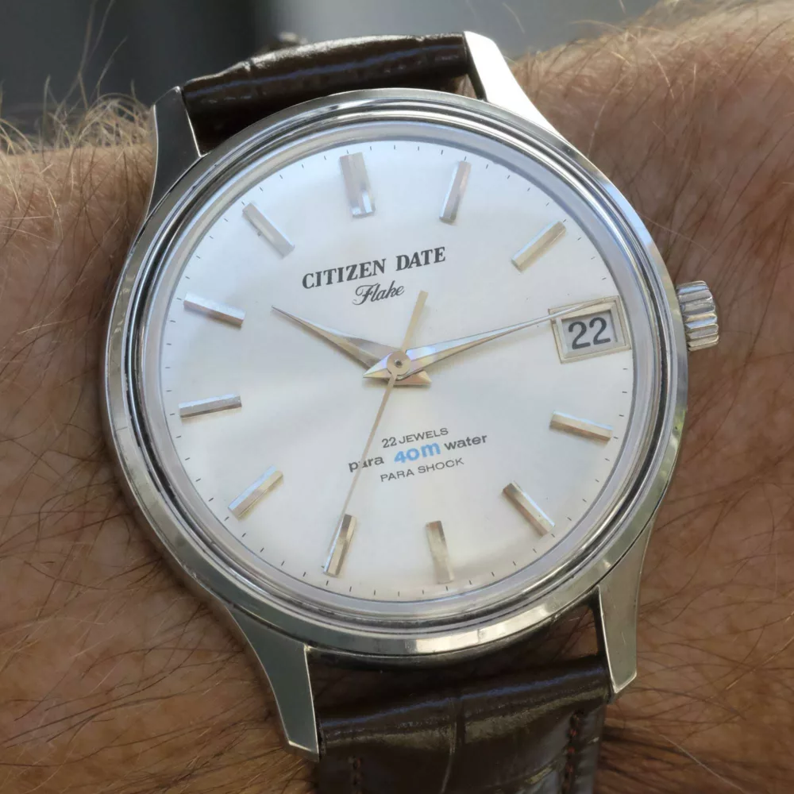
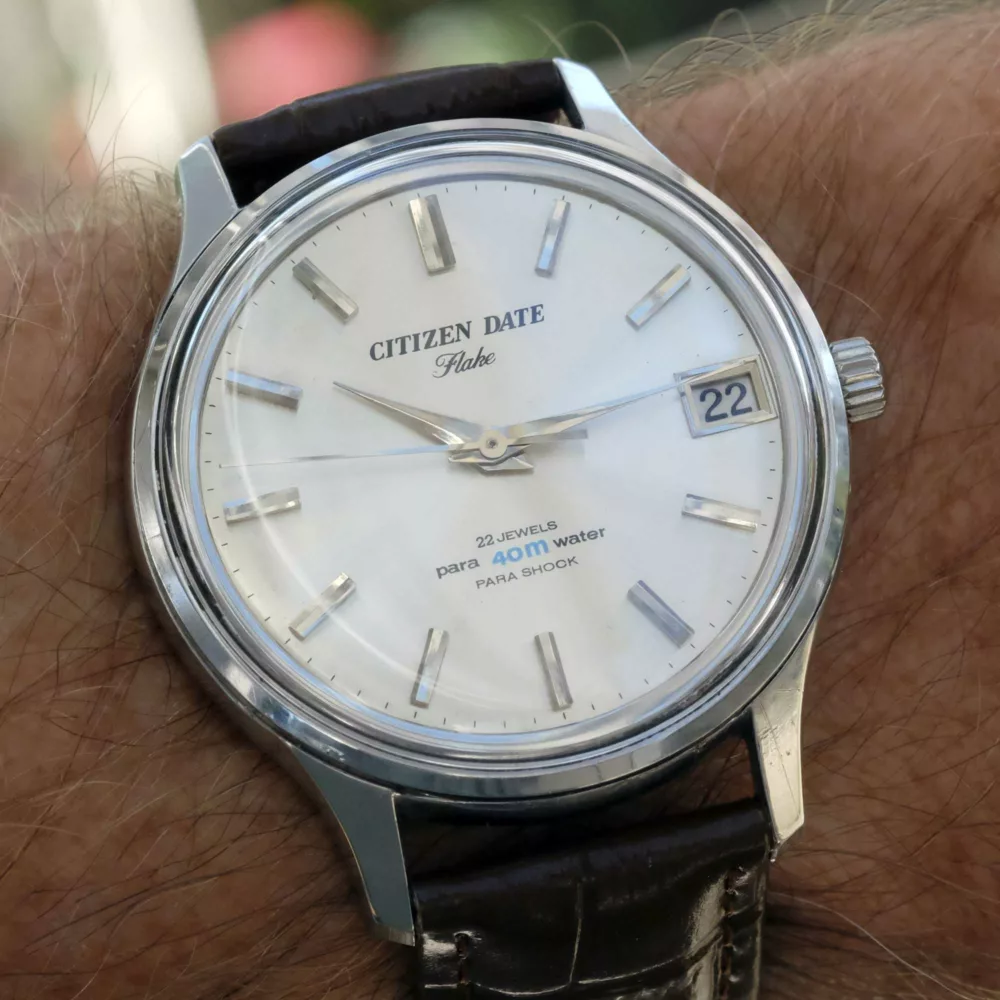

Technical Specifications
| Brand | Citizen (Japan) |
|---|---|
| Model | Date Flake |
| Reference / Calibre | In-house Calibre 2710 |
| Movement Type | Hand wound (Mechanical manual) |
| Frequency | 18,000 bph |
| Case Material | Stainless Steel |
| Diameter | 38 mm (excl. crown) |
| Lug Width | 18 mm |
| Year of Manufacture | 1966 |
| Crystal | New Acrylic (fitted during service) |
| Strap | New hand-selected genuine leather band |
| Service Status | Cleaned, lubricated, regulated (10/2026) |
Citizen Date Flake cal.2710, 1966
Gorgeous rare Citizen Date Flake produced in 1966. Very good overall condition. Big 38 mm stainless steel case, champagne dial, hands and hour markers in very good condition. New acrylic crystal, new leather band.
Detailed Description
Rare Citizen Date Flake from 1966, in very good condition fitted with an in-house 2710 hand wound movement.
Big 38 mm stainless steel case in very good condition, champagne dial, hands and hour markers in very good condition as well. The acrylic crystal is new, as is the leather band.
The movement has been serviced (cleaned, relubricated) and is holding good time.
Vintage watch without known history but serviced, checked and cleaned (10/2026). Water resistance non tested. The pictures are actual and are part of the description, so please look carefully at them.